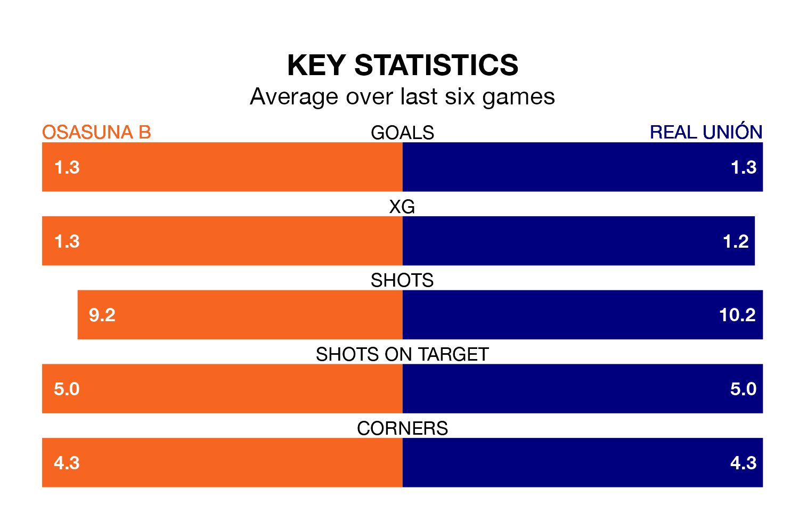

Real Unión travel to Osasuna B on Saturday in Primera Division RFEF Group 1.
The visitors come into the game on the back of a win in their last match, having beaten Unionistas de Salamanca CF 3-1 at home, with goals from Asier Benito Sasiain, Alberto Solís Gómez and Antón Escobar Tapias.
Osasuna B, meanwhile, drew their last match, 1-1 against SD Logroñés, with their goal scored by Max Svensson Río.
With 41 goals in 33 games so far this season, Unión are scoring more than average in the league with 1.2 goals per game. But they are conceding more than average too, letting in 45 goals at a rate of 1.4 per game.
Osasuna B are also above average scorers, with 1.2 goals per game, compared to a league average of 1.1. They have conceded 1.4 goals per game.
In Ander Yoldi Aizagar, the hosts have one of the league's most on-form strikers so far this season. He has notched eight goals in 24 appearances, to sit second in the scoring charts.
The away team's top scorer, with eight goals in 24 games, is Solís Gómez.
In the last 10 years, Osasuna B and Unión have played each other on nine occasions. Osasuna B won six of them, Unión two, and they drew once.
On average, Osasuna B scored 1.9 goals and Unión 1.2 in those matches.
Their last meeting was on December 10, when Osasuna B won 3-2 away.
Osasuna B are in mixed form in Primera Division RFEF Group 1, with two wins and two draws from their last six games.
With two wins and a draw over that period, Unión's form is slightly worse – they have taken seven points from 18, compared to Osasuna B's eight.
The home side are 13th in the table after 33 games, of which they have won nine and drawn 11, earning 38 points.
Unión are one place ahead of Osasuna B in 12th, with 10 wins and nine draws putting them on 39 points.
Updated: 07:59 (UTC), 26/04/24